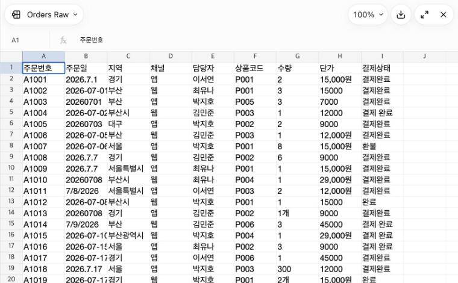
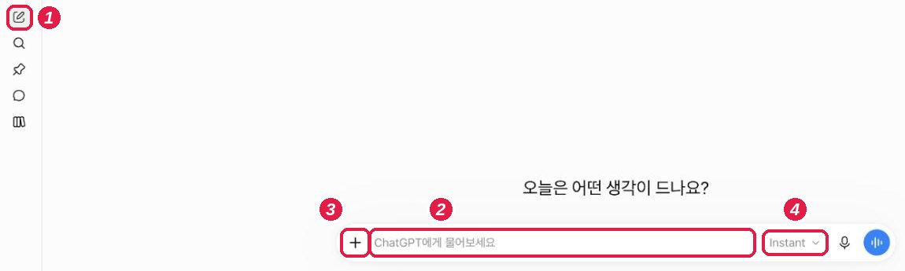
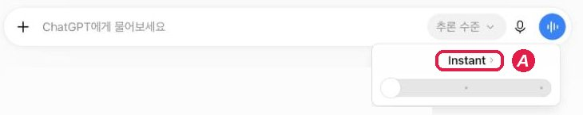
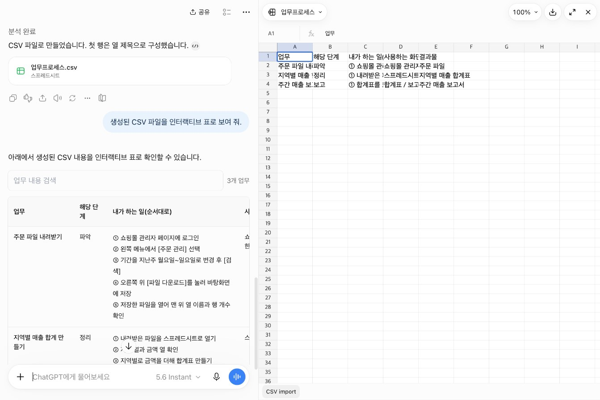
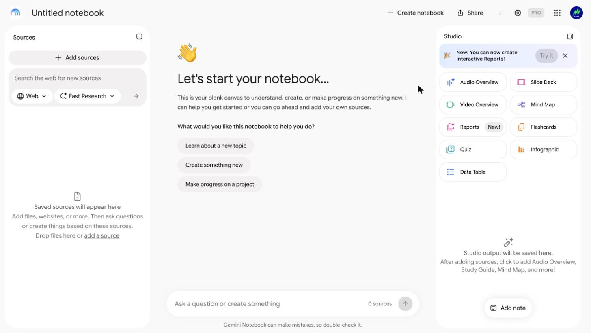
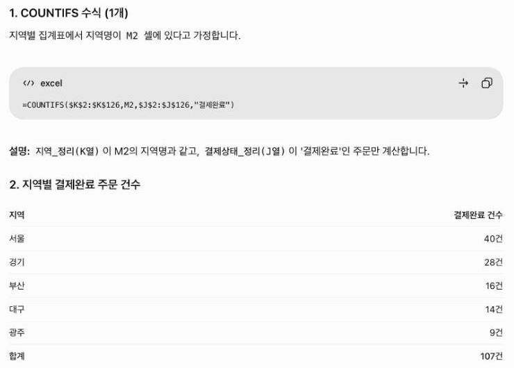
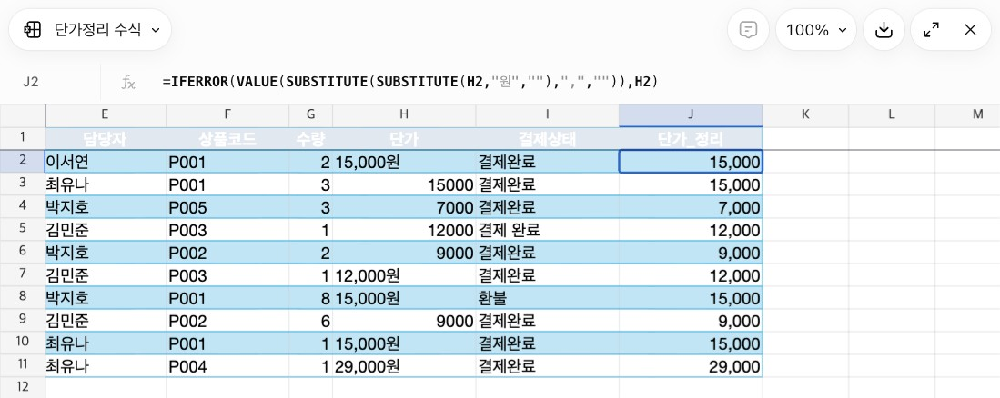
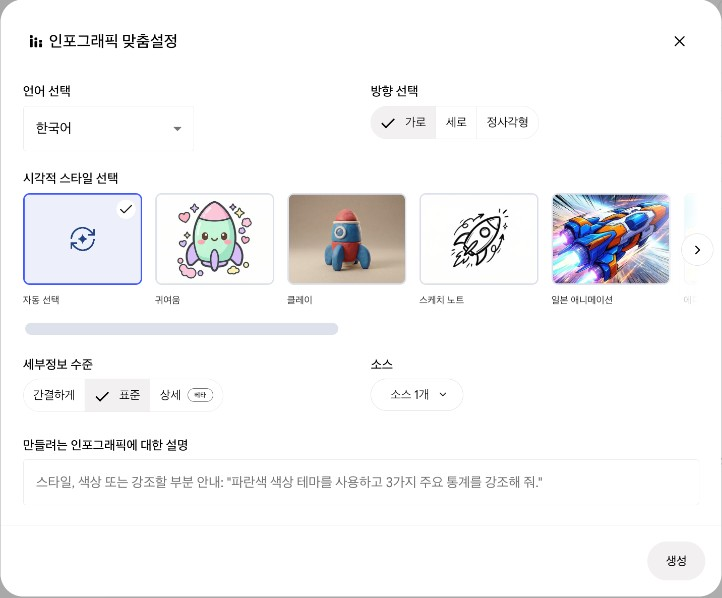
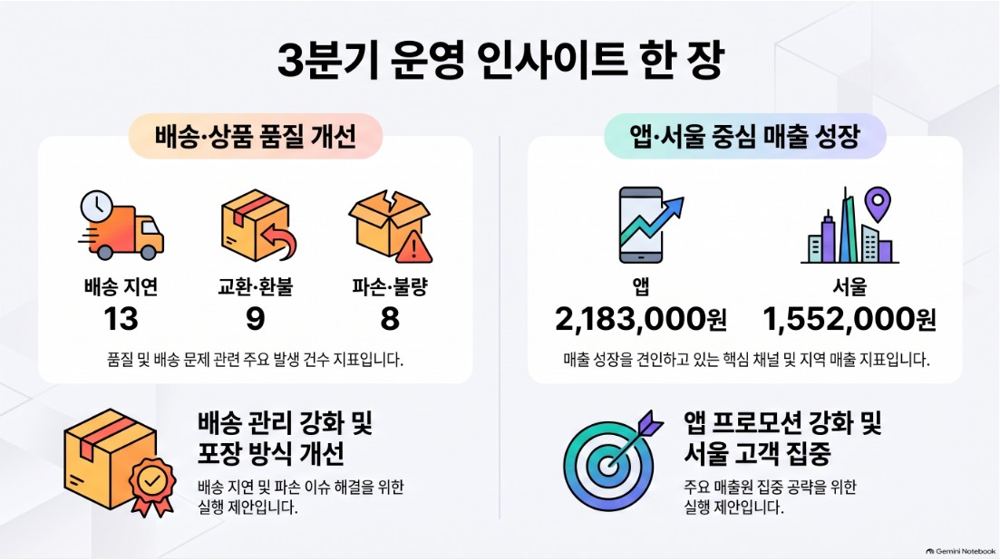

생성형 AI로
데이터를 정리하고, 분석하고, 보고까지
오늘은 AI와 함께 데이터 업무를 처음부터 끝까지 해 보는 날이에요. 실무처럼 정리가 필요한 시트 한 장을 받아서 정리하고, 집계하고, 분석 질문을 던지고, 보고서 한 장으로 마무리해 볼 거예요. 하루 동안 같은 데이터 하나를 끝까지 끌고 가면서, 여러분의 업무에 그대로 옮겨 쓸 수 있는 프롬프트와 검증 습관을 가져가시면 됩니다.
교육 개요
| 시간 | 10:00–17:00 (점심 12:30–13:30, 실습 6시간) |
|---|---|
| 도구 | ChatGPT 유료 계정프롬프트 작성, 함수 생성, 파일 분석·확인 NotebookLM정리한 글을 도식·인포그래픽으로 시각화 |
| 교육 목표 | AI를 활용해 데이터 시트를 분석하고 함수·수식·정리 규칙을 생성하여, 데이터 정리 → 요약 → 분석 질문 → 결과 정리까지 AI 중심 워크플로우로 수행할 수 있다 |
| 수업이 끝나면 | ① 내 반복 업무를 단계로 쪼개 AI에게 맡길 부분을 정할 수 있다 ② 필요한 함수를 말로 설명해 받아 내고 직접 검증한다 ③ 정리 규칙을 문서로 만들어 일관되게 적용한다 ④ 분석 결과를 검증용 자료(테스트 항목)와 보고서로 정리한다 ⑤ 다음 달에도 다시 쓸 수 있는 나만의 리포트 프롬프트를 갖는다 |
타임테이블
오전에는 일하는 방식(워크플로우)과 함수 생성을, 오후에는 같은 데이터를 가공하고 분석해서 보고서로 만드는 흐름으로 진행해요. NotebookLM은 오전에 한 번 가볍게 써 보고, 오후 보고 단계에서 본격적으로 사용할 거예요.
| 시간 | 세션 | 내용 | 도구 |
|---|---|---|---|
| 10:00–11:00 | 1. 생성형 AI로 데이터 분석 '워크플로우' 만들기 |
| ChatGPTNotebookLM |
| 11:00–12:30 | 2. 생성형 AI 활용한 함수 생성 |
| ChatGPT스프레드시트 |
| 12:30–13:30 | 점심 (진행에 따라 변경 가능) | ||
| 13:30–14:30 | 3. 프롬프트 활용한 데이터 가공하기 |
| ChatGPT스프레드시트 |
| 14:30–15:30 | 4. AI로 데이터 분석하기 |
| ChatGPTNotebookLM |
| 15:30–16:30 | 5. 문제 이해와 인사이트 도출 |
| ChatGPTNotebookLM |
| 16:30–17:00 | 6. 리포트 자동화 구현 |
| ChatGPT |
수업 전 준비
오늘 수업은 브라우저에서 진행해요. 아래 세 가지만 미리 준비해 오시면 됩니다.
- ChatGPT 계정: chatgpt.com에서 유료 계정으로 미리 로그인해 두세요. 오늘 모든 실습은 ChatGPT 유료 계정으로 진행해요. 모델은 수업을 시작할 때 함께 맞춰요.
- NotebookLM 계정: notebook.google.com에 구글 계정으로 로그인해 주세요. ChatGPT와는 별도 사이트라서 로그인이 따로 필요해요.
참고: 내 ChatGPT 사용량은 ChatGPT 사용량 보기에서 확인할 수 있어요.
실습 파일
오늘 실습은 가상의 온라인 생활용품 쇼핑몰 "셀렉트마켓"의 2026년 3분기(7~9월) 데이터로 해요. 실제 업무 파일처럼 정리할 거리가 곳곳에 들어 있어요. 아래 세 단계로 파일을 준비해요.
1. 파일 다운로드
아래 3개의 파일을 다운로드해 주세요.
2. 파일 열어보는 방법
받은 파일을 열어서 어떤 데이터가 들어 있는지 살펴봐요. 파일은 ChatGPT 채팅 화면에서 열어요. 아래 제목을 눌러 펼쳐 보세요.
채팅에서 열어보기눌러서 펼쳐 보세요
① 파일 추가 메뉴 열기: ChatGPT에서 새 대화를 열고, 입력창 왼쪽의 [+]를 눌러 [사진 및 파일 추가]를 선택해요.

② 파일 올리기: 받은 orders_raw.csv를 선택하면 입력창에 파일이 붙어요. 파일 이름 아래에 "스프레드시트"라고 표시돼요.

③ 표로 보여 달라고 요청하기: "첨부한 파일을 ChatGPT 안에서 인터랙티브 표로 보여 줘"라고 보내요. 표가 나오면 확대해서 전체 화면으로 열고, 어떤 데이터가 들어 있는지 천천히 훑어보세요. 표가 바로 나오지 않으면 "맨 위 10행을 인터랙티브 표로 보여 줘"라고 다시 요청해 보세요.
④ 시트 화면으로 크게 보기: 메시지를 보낸 뒤 대화창에 붙은 파일 미리보기 표의 오른쪽 위 [펼치기] 아이콘을 누르면, 오른쪽에 시트 화면이 열려요.

3. 파일 내부 형식
받은 파일은 이름 끝이 .csv예요. 먼저 내 컴퓨터에서 이 파일을 메모장으로 열어 보세요. 파일을 마우스 오른쪽 버튼으로 누르고 [연결 프로그램]에서 메모장(맥은 [다음으로 열기]에서 텍스트 편집기)을 골라요. 표가 아니라 아래처럼 쉼표(,)로 나뉜 글자가 줄줄이 보여요.
주문번호,주문일,지역,채널,담당자,상품코드,수량,단가,결제상태A1001,2026.7.1,경기 ,앱,이서연 ,P001,2,"15,000원",결제완료A1002,2026-07-01,부산,웹,최유나,P001,3,15000,결제완료CSV는 이렇게 쉼표로 칸을 나눠 적은 텍스트 파일이에요. 한 줄이 표의 한 행이고, 쉼표와 쉼표 사이가 칸 하나예요. "15,000원"처럼 값 안에 쉼표가 있으면 큰따옴표로 감싸서 칸이 나뉘지 않게 해요. 그래서 ChatGPT에 올리면 이 글자들이 표로 보여요. 파일마다 어떤 형식으로 데이터가 들어 있는지 볼게요.
| 파일 | 한 행이 뜻하는 것 | 열 이름(머리글) | 첫 데이터 행의 값 |
|---|---|---|---|
orders_raw.csv | 주문 한 건 | 주문번호, 주문일, 지역, 채널, 담당자, 상품코드, 수량, 단가, 결제상태 | A1001 · 2026.7.1 · 경기 · 앱 · 이서연 · P001 · 2 · 15,000원 · 결제완료 |
products.csv | 상품 하나 | 상품코드, 상품명, 카테고리, 정가 | P001 · 텀블러 500ml · 리빙 · 15000 |
voc.csv | 고객 문의 한 건 | 접수번호, 접수일, 접수경로, 내용 | V501 · 2026-07-01 · 리뷰 · 예상 도착일보다 3일 늦게 받았습니다. |
표를 다룰 때 쓰는 단어도 알아 둘게요. 이 단어들은 오늘 계속 나와요.
| 용어 | 뜻 | ChatGPT 시트 화면에서는 |
|---|---|---|
| 열 | 세로로 이어진 칸의 줄 | 위쪽의 A, B, C… 글자가 열 이름이에요. 1행에는 '지역', '단가' 같은 머리글이 있어요 |
| 행 | 가로로 이어진 칸의 줄 | 왼쪽의 1, 2, 3… 숫자가 행 번호예요. 주문 한 건이 한 행이에요 |
| 셀 | 칸 하나 | 열 글자와 행 번호를 합쳐 C5처럼 불러요. 왼쪽 위 칸에 지금 선택한 셀 주소가 보여요 |
| 시트 | 파일 안의 표 한 장 | 시트 화면 왼쪽 위에 이름이 보여요(예: Orders Raw) |
| 머리글 | 맨 첫 행에 적힌 열 제목 | 주문번호, 주문일, 지역… |
생성형 AI로 데이터 분석 '워크플로우' 만들기
이 시간에는 먼저 내 업무를 스케치하고, 그 업무를 5가지 단계(파악 · 정리 · 요약 · 분석 · 보고)로 쪼개서 살펴봐요. 어떤 단계에서 데이터 분석이 일어나는지 확인하면서, 내 업무 방식을 하나의 프로세스로 정의해 볼 거예요. 이렇게 정의해 두면 AI에게 무엇을 어느 단계에서 부탁할지 분명해져요. 그다음에는 프롬프트를 잘 쓰는 방법도 배워요.
시작 전: ChatGPT 화면 살펴보고 모델 맞추기
실습을 시작하기 전에 ChatGPT 웹 화면에서 자주 쓰는 곳 네 군데를 확인하고, 모두 같은 모델로 맞춰요. 오늘 수업은 GPT-5.6 Sol · Instant로 맞춰서 진행해요. 모델이 다르면 같은 프롬프트를 보내도 답변 모양이 달라지고, 만든 파일이 시트 화면으로 열리지 않을 수 있어요.

| 번호 | 이름 | 하는 일 |
|---|---|---|
| ① | 새 채팅 | 새 대화창을 열어요. 실습 주제가 바뀔 때 눌러요. |
| ② | 입력창 | 프롬프트를 붙여 넣고 Enter로 보내요. |
| ③ | + (파일 추가) | 실습 파일(CSV)을 첨부해요. |
| ④ | 모델·추론 수준 표시 | 지금 쓰는 모델과 추론 수준이 보여요. 오늘은 여기에 5.6 Instant가 보여야 해요. |
모델 확인하고 GPT-5.6 Sol · Instant로 맞추기


모델은 답을 만드는 AI 자체예요. GPT-6, GPT-5.6 Sol처럼 이름이 다르면 다른 AI예요. 자동차로 치면 차종이에요.
추론 수준은 같은 모델이 답하기 전에 얼마나 생각할지 정하는 설정이에요. 자동차로 치면 주행 모드예요. Instant는 오래 생각하지 않고 바로 답하는 가장 빠른 수준이에요. 수준을 높이면 답이 느려지는 대신 복잡한 문제를 더 꼼꼼히 풀어요.
오늘은 모두 같은 화면과 비슷한 답을 보기 위해 모델은 GPT-5.6 Sol, 추론 수준은 Instant로 맞춰요.
먼저, 워크플로우란?
오늘 수업 제목에 나오는 "워크플로우"라는 단어부터 풀어 볼게요.
워크플로우(workflow)는 일(work)이 흐르는(flow) 순서를 뜻해요. 일이 시작해서 끝나기까지 어떤 단계를 거치는지를 순서대로 나열한 거예요. 점심을 주문하는 일도 "메뉴 고르기 → 주문하기 → 결제하기 → 받기"라는 워크플로우가 있어요. 데이터 업무에도 같은 흐름이 있어요. "주문 파일 내려받기 → 정리하기 → 합계 구하기 → 비교하기 → 보고하기" 같은 순서예요.
"AI로 만드는 워크플로우"는 이 순서 중에서 어느 단계를 AI에게 맡기고, 어느 단계를 내가 직접 확인할지 정해 둔 흐름이에요. 이렇게 정해 두면 AI에게 무엇을 어느 단계에서 부탁할지 분명해져요. 오늘 우리가 만들 데이터 분석 워크플로우는 다섯 단계예요.
"프로세스"라는 말도 자주 나와요. 프로세스는 일을 진행하는 방식과 절차를 뜻하고, 오늘은 워크플로우와 거의 같은 뜻으로 써요. 이제 내 업무로 이 워크플로우를 직접 만들어 볼게요.
1-1. 내 업무를 스케치하고 5단계로 쪼개기
네 단계로 진행해요. 먼저 메모장에 내 업무를 자유롭게 적고, 그중에서 데이터를 다루는 일을 찾아요. 그다음 그 일을 내 손으로 직접 풀어서 써 보고, 마지막에 AI와 함께 표로 정리해서 파일로 저장합니다.
STEP 1. 메모장에 내 업무 스케치하기
월요일 09:30 주문 파일 내려받기 ★
월요일 10:00 팀 회의
월요일 11:00 지난주 지역별 매출 합계 만들기 ★
월요일 14:00 팀장님께 주간 매출 보고 ★
STEP 2. 3가지 업무를 풀어서 직접 써 보기
이 수업에서는 아래 세 가지 업무를 예로 들게요. 내 업무에 별표 친 일이 있다면 그 일로 바꿔도 좋아요.
- ① 주문 파일 내려받기
- ② 지역별 매출 합계 만들기
- ③ 주간 매출 보고하기
이 세 가지를 내가 실제로 어떻게 진행하는지, 어디를 누르고 무엇을 입력하는지를 줄줄이 풀어서 직접 써 보세요. 여기서는 AI를 쓰지 않고 내 손으로 써야 해요. 내가 어떻게 일하는지는 나만 알고 있기 때문이에요.
1. 쇼핑몰 관리자 페이지에 로그인한다.
2. 왼쪽 메뉴에서 [주문 관리]를 누른다.
3. 기간을 지난주 월요일~일요일로 바꾸고 [검색]을 누른다.
4. 오른쪽 위의 [파일 다운로드]를 눌러 바탕화면에 저장한다.
5. 저장한 파일을 열어 맨 위 열 이름과 행 개수를 확인한다.
글을 쓰다가 참고가 될 만한 자료가 있으면 메모장에 같이 모아 두세요.
- 내가 로그인하는 관리자 페이지 주소(링크)
- 주문 파일을 내려받는 화면을 캡처한 이미지
- 지금 쓰고 있는 보고서 양식 파일
이 자료들은 다음 단계에서 AI에게 내 업무를 정확히 알려 주는 재료가 돼요.
STEP 3. AI로 표 만들기
이제 AI를 쓸 차례예요. STEP 2에서 쓴 글을 ChatGPT에게 보여 주고, 표로 정리해 달라고 요청해요. 아래 프롬프트를 복사해서 ChatGPT에 붙여 넣고, [ ] 부분을 내 내용으로 바꿔 보내세요.
나는 [직무]이고, 아래는 내가 하는 업무 3가지를 직접 풀어서 쓴 글이야. [STEP 2에서 쓴 글 붙여넣기] 이 3가지 업무를 하나의 표로 정리해 줘. - 행: 업무 3가지 (주문 파일 내려받기 / 지역별 매출 합계 만들기 / 주간 매출 보고하기) - 열: 해당 단계(파악·정리·요약·분석·보고 중 하나) / 내가 하는 일(순서대로) / 사용하는 화면이나 도구 / 결과물 내가 쓴 글에 없는 내용은 새로 만들지 말고, 글에 없는 칸은 '내용 없음'으로 적어 줘.
그러면 ChatGPT가 이런 표를 만들어 줘요 (예시)
| 업무 | 해당 단계 | 내가 하는 일 (순서대로) | 화면·도구 | 결과물 |
|---|---|---|---|---|
| 주문 파일 내려받기 | ① 파악 | 1) 관리자 페이지에 로그인 2) [주문 관리] 클릭 3) 지난주 기간으로 [검색] 4) [파일 다운로드]로 저장 5) 열 이름과 행 개수 확인 | 쇼핑몰 관리자 페이지, 스프레드시트 | 지난주 주문 파일 |
| 지역별 매출 합계 만들기 | ③ 요약 | 1) 지역 열과 금액 열 확인 2) 지역별로 금액을 더함 3) 합계를 표로 정리 | 스프레드시트 | 지역별 매출 합계표 |
| 주간 매출 보고하기 | ⑤ 보고 | 1) 합계표에서 결론 한 줄 정하기 2) 근거 숫자 3개 고르기 3) 한 장으로 정리해 팀장님께 보고 | 스프레드시트, 보고서 양식 | 주간 매출 보고서 한 장 |
위 표는 예시이고, 내가 쓴 글에 따라 내용이 달라져요. 표가 나오면 내가 쓴 글과 하나씩 비교하며 확인하세요. 내가 쓰지 않은 내용이 들어갔거나 빠진 내용이 있으면 ChatGPT에게 다시 고쳐 달라고 해요. 빠진 단계가 없는지는 ChatGPT가 알 수 없어요. 내 업무를 아는 사람은 나뿐이라서, 이 확인은 내가 해야 해요.
STEP 4. 만들어진 결과를 파일로 열어 볼까요?
ChatGPT가 만든 표는 대화창 안에만 있어요. 이 표를 동료에게 보내거나 보고에 쓰려면 파일로 받아 두면 편해요. STEP 3에서 표를 만든 같은 대화창에서 이어서 요청해요.
ChatGPT 채팅 화면에서 파일로 열기
방금 만든 표를 CSV(.csv) 파일로 만들어 줘. - 파일 이름은 '업무프로세스'로 해 줘 - 첫 행은 열 제목으로 해 줘 - 다운로드할 수 있는 파일로 줘
파일이 만들어지면 같은 대화창에서 아래처럼 요청해 표로 확인해요.
생성된 CSV 파일을 인터랙티브 표로 보여 줘.

1-2. NotebookLM 업무 흐름을 그림으로 바꿔 보기
업무 순서를 글이나 표로만 보면 흐름이 잘 안 보여요. 그림으로 바꾸면 순서와 흐름이 한눈에 들어와요. 이렇게 업무 순서를 그림으로 그리는 일을 도식화라고 해요. NotebookLM으로 직접 그려 봐요.
NotebookLM은 내가 넣은 글(소스)을 바탕으로 요약, 마인드맵, 인포그래픽 같은 결과물을 만들어 주는 구글의 AI 도구예요. 넣은 글을 바탕으로 만들기 때문에, 짧고 구조가 분명한 글을 넣을수록 그림이 잘 나와요.
① 로그인하기: notebook.google.com에 접속해 구글 계정으로 로그인해요. 화면 위쪽에 Gemini Notebook이라고 보여도 같은 서비스예요.
② 새 노트북 만들기: [새 노트북 만들기]를 눌러 노트북을 하나 만들어요. 노트북은 소스와 결과물을 한곳에 모아 두는 작업 공간이에요.

노트북을 열면 화면이 세 부분으로 나뉘어요.
- 왼쪽 소스(Sources): 내가 넣은 자료(파일, 웹사이트, 붙여 넣은 글)가 모이는 곳이에요. NotebookLM은 여기 있는 자료만 보고 답해요.
- 가운데 채팅: 넣은 소스를 바탕으로 질문하고 답을 받는 곳이에요.
- 오른쪽 Studio(스튜디오): 인포그래픽, 마인드맵, 슬라이드 자료, 보고서 같은 결과물을 버튼 하나로 만드는 곳이에요.
화면 언어는 내 구글 계정의 언어 설정을 따라가요.
① myaccount.google.com/language에 접속해요.
② 선호 언어(Preferred language)를 한국어로 바꿔요.
③ 노트북 화면으로 돌아와 새로고침해요.
답변과 인포그래픽 같은 결과물의 언어는 따로 정해요. 노트북 화면 오른쪽 위 톱니바퀴(설정)에서 [출력 언어(Output language)]를 골라 바꿔요.
③ 소스로 글 붙여넣기: 소스를 추가하는 화면에서 붙여넣은 텍스트(복사한 텍스트)를 고르고, 아래 글을 복사해 붙여 넣어요. 주간 매출 보고 업무의 5단계를 한 글로 정리한 예시예요.
주간 매출 보고 업무 흐름 1. 파악: 쇼핑몰 관리자에서 주문 파일을 내려받아 열 이름과 값을 훑어본다 2. 정리: 지역과 결제상태 표기를 통일하고 중복 주문을 지운다 3. 요약: 지역별 매출 합계를 만든다 4. 분석: 지난주와 비교해 늘어난 지역과 줄어든 지역을 찾는다 5. 보고: 결론 한 줄과 근거 숫자 3개로 한 장 보고서를 만든다
④ Studio에서 인포그래픽 만들기: 화면 오른쪽의 Studio(스튜디오) 패널에서 [인포그래픽]을 눌러요. 그림의 방향(가로, 세로, 정사각형)과 자세한 정도를 고르고, 요청 칸에 "5단계 흐름이 한눈에 보이게 만들어 줘. 단계 이름은 원문 그대로 써 줘."라고 적은 뒤 만들어요.
⑤ 확인하고 저장하기: 완성된 그림의 단계 이름과 숫자가 원문과 같은지 확인하고, 다운로드 아이콘으로 이미지를 저장해요. 흐름이 아니라 개념의 관계를 보고 싶다면 Studio의 [마인드맵]도 만들어 비교해 보세요.
화면의 버튼 이름은 업데이트에 따라 조금씩 달라질 수 있어요.
1-3. 프롬프트 엔지니어링: ChatGPT에 잘 요청하는 법
사용 파일 orders_raw.csv (주문 내역 125행). 실습 1~4는 모두 이 파일을 ChatGPT에 올려서 이어서 해요.
ChatGPT에게 일을 시킬 때 쓰는 요청 글을 프롬프트라고 해요. 원하는 결과가 나오도록 프롬프트를 설계하고 다듬는 일은 프롬프트 엔지니어링이라고 해요. 목표와 기준이 분명하지 않으면 ChatGPT는 내 상황을 추측해서 답해요. 그래서 오늘은 프롬프트를 아래 세 줄로 써요.
- 요청: 무엇을 해 달라는지
- 내용: 무엇을 줬는지 (파일, 데이터, 상황)
- 형식: 어떤 모양으로 받을지 (표, 수식 1개 등)
| 실습 | 할 일 | 대화창 |
|---|---|---|
| 1 | 프롬프트 A: 요청 한 줄만 보내기 | 새 채팅 ㉮ (파일 첨부) |
| 2 | 프롬프트 B: 요청·내용·형식을 갖춰 보내기 | 새 채팅 ㉯ (파일 첨부) |
| 3 | 결과를 보고 고쳐 나가기 | ㉯에서 이어서 |
| 4 | 메타 프롬프트로 다음번 프롬프트 만들기 | ㉯에서 이어서 |
실습 1. 프롬프트 A: 요청 한 줄만 보내기
새 채팅 ㉮를 열고 orders_raw.csv를 첨부한 뒤, 아래 한 줄만 보내요.
지역 정리하는 함수 알려 줘
결과 확인 답을 보면서 내가 정하지 않았는데 ChatGPT가 대신 정한 것을 찾아보세요. 예를 들어 어느 지역까지 바꿀지, 어떤 이름으로 통일할지, 수식만 줄지 표까지 보여 줄지 같은 것들이에요. 파일을 올려도 무엇을 어디까지, 어떤 모양으로 원하는지 말하지 않으면 ChatGPT가 추측해서 답해요.
실습 2. 프롬프트 B: 요청 / 내용 / 형식을 갖춰 보내기
새 채팅 ㉯를 열고 orders_raw.csv를 첨부한 뒤 아래 프롬프트를 보내요. 이번에는 범위를 일부러 서울만으로 정해요.
요청: '지역' 열에서 서울을 뜻하는 표기를 모두 '서울'로 통일하는 수식을 만들고, 그 수식을 적용한 '지역_정리' 열을 추가해 줘. 내용: 첨부한 orders_raw.csv의 '지역' 열에 서울, 서울시, 서울특별시, seoul, 앞에 공백이 붙은 ' 서울'이 섞여 있어. 형식: 수식 1개, 한 줄 설명, '지역' 원래 값별로 '지역_정리'가 어떻게 바뀌었는지 보여 주는 표
예상 결과 (예시)
| 지역 (원래 값) | 지역_정리 (기대 결과) |
|---|---|
| 서울 / 서울특별시 / 서울시 / seoul / " 서울" (46행) | 모두 서울 |
| "경기 " (뒤에 공백, 14행) | 경기 (뒤 공백만 지움) |
| 경기도 (4행) | 경기도 (그대로) |
| 부산 / 부산시 / 부산광역시 | 그대로 |
| 대구 / 대구광역시, 광주 / 광주광역시 | 그대로 |
실습 1의 답과 비교해 보세요. B는 내가 정한 범위(서울만), 내가 정한 열 이름(지역_정리), 내가 정한 모양(수식·설명·표)대로 답해요. ChatGPT가 추측하던 부분을 요청·내용·형식으로 채워 준 차이예요. 표가 함께 나오지 않았다면 "이 함수를 적용해서 결과를 인터랙티브 표로 볼 수 있게 해 줘"라고 이어서 요청해요.
실습 3. 결과를 보고 고쳐 나가기
경기도, 부산시·부산광역시, 대구광역시, 광주광역시는 요청에 없어서 그대로 남았어요. 같은 대화창 ㉯에서 필요한 부분만 이어서 요청해요. 파일은 다시 올리지 않아도 돼요. 이렇게 결과를 보고 고쳐 나가는 것이 프롬프트 엔지니어링이에요.
요청: 경기도는 '경기'로, 부산시·부산광역시는 '부산'으로, 대구광역시는 '대구'로, 광주광역시는 '광주'로도 통일하도록 수식을 고쳐 줘. 내용: 수식이 너무 길어지면 매핑표(원래 표기 → 통일할 표기)를 따로 만들어 조회해도 돼. 형식: 수정한 수식 1개, '지역_정리' 값별 건수 표와 맨 아래 합계
수식 IF를 겹치는 대신 SWITCH나 매핑표를 쓰는 수식이 나올 수 있어요. 예:
=SWITCH(LOWER(TRIM(C2)),"서울","서울","서울시","서울", … ,"부산광역시","부산",TRIM(C2))지역_정리 값별 건수 서울 46 / 경기 33 / 부산 19 / 대구 17 / 광주 10 (합계 125)
합계가 파일 행 수(125)와 같은지 확인해요. 행이 빠지거나 늘지 않았는지 보는 습관은 세션 3 검증 체크에서 다시 써요.
실습 4. 메타 프롬프트로 다음번 프롬프트 만들기
ChatGPT에게 "프롬프트를 만들어 달라"고 요청할 수도 있어요. 이렇게 프롬프트에 대한 프롬프트를 메타 프롬프트라고 해요. 같은 대화창 ㉯에서 지금까지 한 작업을 다음번에 한 번에 시킬 수 있는 프롬프트로 정리해 달라고 해요.
요청: 지금까지 한 '지역' 열 정리 작업을 다음번에 한 번에 시킬 수 있는 프롬프트를 만들어 줘. 내용: 나는 주문 데이터를 정리하는 담당자야. 프롬프트를 만드는 데 필요한 정보가 더 있으면 먼저 나에게 질문해 줘. 질문은 5개 이내로 해 줘. 형식: 요청 / 내용 / 형식 세 줄
실습 2~3에서 두 번에 나눠 요청한 내용이 프롬프트 한 개에 모였어요. 질문을 먼저 하는 경우도 있으니 답해 주면 돼요. 만든 프롬프트는 메모장에 저장해 두세요. 다음에는 파일만 바꿔 올려서 한 번에 요청할 수 있어요. 내 업무에 쓰려면 "지금까지 한 '지역' 열 정리 작업" 부분을 내가 하고 싶은 일로 바꿔요.
더 알아보고 싶다면 OpenAI의 공식 안내를 참고하세요.
생성형 AI 활용한 함수 생성
데이터를 정리할 때 하고 싶은 일은 분명한데, 어떤 함수를 써야 할지 몰라서 막힐 때가 많아요. 이 시간에는 생성형 AI로 모르는 함수를 만들어 받고, 그 함수로 실제 문제를 해결해 봐요. 함수 이름을 몰라도 "이 열이 지금 이렇게 생겼는데, 이렇게 바뀌었으면 좋겠다"를 정확히 설명하면 AI가 수식을 만들어 줘요. 우리가 할 일은 그 수식이 맞는지 확인하는 거예요.
2-1. 이번 세션에서 할 일
orders_raw.csv 파일로 이번 세션을 연습해요. 이번에는 데이터가 들어 있는 파일 안에서 데이터를 정리하거나 함수를 만들 때 AI를 활용하는 방법을 배워요. 아래 순서로 진행해요.
2-2. 먼저 데이터 파악하기
사용 파일 orders_raw.csv (주문 내역 125행). 수업 전 준비에서 받은 파일이에요.
orders_raw.csv를 ChatGPT에 올리고 아래 프롬프트를 입력해 보세요.
요청: 집계하기 전에 정리해야 할 곳을 찾아 줘. 데이터는 고치지 마. 내용: 첨부한 orders_raw.csv는 쇼핑몰 주문 내역(125행)이야. 형식: 표 (열 이름 / 문제 내용 / 예시 값 / 해당 행 수)
AI가 찾은 항목을 아래 목록과 비교해 보세요. 아래 숫자는 원본 125행 그대로 센 숫자예요. 빠진 항목은 없는지, 실제로 있는 항목인지 ChatGPT에게 "해당 행을 표로 보여 줘"라고 요청해 직접 확인해 보세요.
| 열 | 정리 항목 | 규모 |
|---|---|---|
| 전체 | 완전히 같은 행이 중복 | 5행 (125행 → 120행) |
| 주문일 | 날짜 형식 4가지 혼용 (2026-07-01, 2026.7.1, 7/8/2026, 20260701) | 60행 / 32행 / 20행 / 13행 |
| 지역 | 같은 지역의 다른 표기 (서울, 서울시, 서울특별시, seoul, 앞뒤 공백 등) | 15가지 표기 → 5개 지역 (앞뒤 공백 19행 포함) |
| 담당자 | 이름 뒤 공백 | 18행 |
| 수량 | "3개"처럼 단위가 붙은 값, 빈칸, 이상치(300, 250, 250, -2) | "개" 붙은 값 25행 빈칸 4행 이상치 4행 |
| 단가 | "15,000원"처럼 글자로 들어간 값 | 30행 |
| 결제상태 | 같은 뜻의 다른 표기 (결제완료·완료·결제 완료 / 취소·주문취소) | 6가지 표기 → 3개 상태 |
2-3. 함수 받아 내기
사용 파일 orders_raw.csv (주문 내역 125행)와 products.csv (상품 목록 6행). 두 파일을 같은 대화창에 함께 올리고 시작해요.
정리할 곳마다 프롬프트 보내기 → 결과 확인 순서로 9단계를 진행해요. 모든 단계는 같은 대화창에서 이어서 해요. 원본 열은 그대로 두고, 정리한 값은 '단가_정리'처럼 원래 열 이름 뒤에 '_정리'를 붙인 새 열로 추가해요.
수식 예시는 AI가 줄 수 있는 답 중 하나예요. 답은 매번 조금씩 달라서, 수식이 달라도 확인 값이 같으면 정답이에요. 확인 값은 모두 원본 125행 기준이라, 중복을 지운 세션 3의 기준값(120행)과는 조금 달라요.
STEP 1. 담당자 이름의 공백 지우기
요청: '담당자' 열의 앞뒤 공백을 지우는 수식을 만들고, 그 수식을 적용한 '담당자_정리' 열을 추가해 줘. 내용: 첨부한 orders_raw.csv의 '담당자' 열에 "이서연 "처럼 이름 뒤에 공백이 붙은 값이 섞여 있어. 형식: 수식 1개, 한 줄 설명, '담당자_정리' 값별 건수 표
수식 예시
=TRIM(E2)확인 값 고유값 4명 — 김민준 26 / 박지호 29 / 이서연 32 / 최유나 38 (합계 125)
STEP 2. 지역을 5개로 통일하기
요청: '지역' 열을 서울·경기·부산·대구·광주 5개로 통일하는 수식을 만들고, 그 수식을 적용한 '지역_정리' 열을 추가해 줘. 내용: '지역' 열에 서울시, 서울특별시, seoul, 경기도, 부산광역시처럼 같은 지역이 여러 가지로 적혀 있고, 앞뒤에 공백이 붙은 값도 있어. 형식: 수식 1개, 한 줄 설명, '지역_정리' 값별 건수 표
수식 예시
=IF(LOWER(TRIM(C2))="seoul","서울",LEFT(TRIM(C2),2))확인 값 서울 46 / 경기 33 / 부산 19 / 대구 17 / 광주 10 (합계 125)
이 수식은 공백을 지우고 앞 두 글자만 남겨요. 영어로 적힌 seoul만 따로 '서울'로 바꿔요.
STEP 3. 단가를 숫자로 바꾸기
요청: '단가' 열을 모두 숫자로 바꾸는 수식을 만들고, 그 수식을 적용한 '단가_정리' 열을 추가해 맨 위 10행을 표로 보여 줘. 내용: 첨부한 orders_raw.csv의 '단가' 열에 15000 같은 숫자와 "15,000원" 같은 글자가 섞여 있어. 형식: 수식 1개, 한 줄 설명, 적용한 표(10행)

수식 예시
=VALUE(SUBSTITUTE(SUBSTITUTE(H2,",",""),"원",""))확인 값 "15,000원"처럼 글자였던 30행이 숫자로 바뀌고, '단가_정리' 열 합계가 2,086,000
STEP 4. 수량을 숫자로 바꾸기
요청: '수량' 열을 숫자로 바꾸는 수식을 만들고, 그 수식을 적용한 '수량_정리' 열을 추가해 줘. 빈칸은 빈칸 그대로 둬 줘. 내용: '수량' 열에 3 같은 숫자와 "3개" 같은 글자가 섞여 있고, 빈칸도 있어. 형식: 수식 1개, 한 줄 설명, "개"가 붙어 있던 행 수와 빈칸 행 수
수식 예시
=IF(G2="","",VALUE(SUBSTITUTE(G2,"개","")))확인 값 "개"가 붙어 있던 25행이 숫자로 바뀌고, 빈칸 4행은 빈칸 그대로
STEP 5. 상품코드로 상품명 가져오기
요청: '상품코드'로 products.csv에서 상품명을 찾아오는 수식을 만들고, 그 수식을 적용한 '상품명' 열을 추가해 줘. 찾지 못하면 '미등록'으로 표시해 줘. 내용: 첨부한 products.csv에 상품코드별 상품명이 있어. orders_raw.csv의 '상품코드' 열(P001~P006)과 연결해 줘. 형식: 수식 1개, 한 줄 설명, '상품명' 값별 건수 표
수식 예시
=XLOOKUP(F2,products!A:A,products!B:B,"미등록")확인 값 "미등록" 0건 — 텀블러 500ml 35 / 에코백 26 / 머그컵 23 / 노트 세트 15 / 무선 충전기 14 / 블루투스 스피커 12 (합계 125)
엑셀 구버전이라면
=VLOOKUP(F2,products!A:D,2,FALSE)도 같은 결과예요.STEP 6. 금액 계산하기
요청: '수량_정리' × '단가_정리'로 금액을 계산하는 수식을 만들고, 그 수식을 적용한 '금액' 열을 추가해 줘. 계산할 수 없는 행(수량 빈칸)은 빈칸으로 둬 줘. 내용: 4번에서 만든 '수량_정리' 열과 3번에서 만든 '단가_정리' 열을 써 줘. 형식: 수식 1개, 한 줄 설명, 주문번호 A1001·A1002·A1011 행의 수량_정리·단가_정리·금액 표
수식 예시
=IFERROR([수량_정리]*[단가_정리],"")확인 값 A1001: 2 × 15,000 = 30,000 / A1002: 3 × 15,000 = 45,000 / A1011: 2 × 12,000 = 24,000
[ ] 자리는 새로 만든 열이에요. 새 열은 표 오른쪽 끝에 만든 순서대로 붙어서 칸 주소가 사람마다 달라, 열 이름으로 적었어요.
STEP 7. 결제상태를 3가지로 통일하기 (IFS)
IFS는 "조건 1이면 값 1, 조건 2이면 값 2…"처럼 조건을 차례로 확인해서, 처음 맞는 조건의 값을 돌려주는 함수예요. IF를 여러 번 겹쳐 쓰지 않고 한 줄로 쓸 수 있어요. 맨 끝에 TRUE,"확인 필요"를 넣으면 어느 조건에도 맞지 않는 값을 따로 표시할 수 있어요.
요청: '결제상태' 열을 결제완료·취소·환불 3가지로 통일하는 IFS 수식을 만들고, 그 수식을 적용한 '결제상태_정리' 열을 추가해 줘. 어느 조건에도 맞지 않으면 '확인 필요'로 표시해 줘. 내용: 첨부한 orders_raw.csv의 '결제상태' 열에 결제완료, 결제 완료, 완료, 취소, 주문취소, 환불이 섞여 있어. 형식: 수식 1개, 한 줄 설명, '결제상태_정리' 값별 건수 표
수식 예시
=IFS(OR(I2="결제완료",I2="결제 완료",I2="완료"),"결제완료",OR(I2="취소",I2="주문취소"),"취소",I2="환불","환불",TRUE,"확인 필요")확인 값 결제완료 107 / 취소 11 / 환불 7 (합계 125), 확인 필요 0
건수가 다르면 "결제상태 원래 값별로 몇 건씩 어디로 바뀌었는지 표로 보여 줘"라고 요청해 어느 표기가 빠졌는지 찾아보세요.

STEP 8. 지역별 결제완료 매출 합계 구하기 (SUMIFS)
요청: 지역별로 결제완료 주문의 매출 합계를 구하는 SUMIFS 수식을 만들고, 지역별 매출 표를 보여 줘. 내용: 6번에서 만든 '금액' 열, 2번에서 만든 '지역_정리' 열, 7번에서 만든 '결제상태_정리' 열을 기준으로 해 줘. 형식: 수식 1개, 한 줄 설명, 표(지역 / 결제완료 매출)와 맨 아래 합계, 결제완료 전체 매출 한 줄
수식 예시
=SUMIFS([금액],[지역_정리],"서울",[결제상태_정리],"결제완료")확인 값 경기 23,326,000 / 서울 5,207,000 / 대구 879,000 / 부산 772,000 / 광주 310,000 (합계 30,494,000) — 5개 지역 합계가 결제완료 전체 매출 30,494,000과 같은지
경기 매출이 유난히 큰 건 수량 300·250 같은 이상치가 그대로 들어 있어서예요. 이상치는 세션 3에서 처리해요.
STEP 9. 지역별 결제완료 건수 세기 (COUNTIFS)
COUNTIFS는 여러 조건을 모두 만족하는 행이 몇 개인지 세는 함수예요. 8번의 SUMIFS가 조건에 맞는 금액을 더한다면, COUNTIFS는 조건에 맞는 건수를 센다는 점이 달라요. 조건은 "열, 조건값" 짝으로 계속 붙일 수 있어요.
요청: 지역별로 결제완료 주문이 몇 건인지 세는 COUNTIFS 수식을 만들고, 지역별 건수 표를 보여 줘. 내용: 2번에서 만든 '지역_정리' 열(서울·경기·부산·대구·광주)과 7번에서 만든 '결제상태_정리' 열을 기준으로 세 줘. 형식: 수식 1개, 한 줄 설명, 표(지역 / 결제완료 건수)와 맨 아래 합계
수식 예시
=COUNTIFS([지역_정리],"서울",[결제상태_정리],"결제완료")확인 값 서울 40 / 경기 28 / 부산 16 / 대구 14 / 광주 9 (합계 107)
합계가 7번의 결제완료 107건과 같은지 확인해요. 부분의 합이 전체와 같은지 보는 합계 대조예요. 다르면 "지역_정리 값별 건수를 보여 줘"라고 요청해 통일되지 않은 지역 표기가 남았는지 찾아보세요.

2-4. (참고) 수식을 지우고 결과값만 남기기
이전 대화에서 이어서 2-3에서 쓰던 대화창에서 이어서 해요.
2-3에서 만든 '_정리' 열은 셀 안에 수식이 들어 있어요. 팀장님께 보내거나 다른 파일에 붙여 넣기 전에는 수식을 지우고 계산된 결과값만 남겨 두면 안전해요.
요청: 지금까지 만든 표를 엑셀 파일로 만들어 줘. 수식은 모두 없애고, 수식으로 계산된 결과값만 셀에 넣어 줘. 내용: 숫자와 표 모양은 그대로 두고, '_정리'로 끝나는 열과 '금액' 열의 셀에는 수식 대신 계산된 값만 넣어 줘. 형식: 다운로드할 수 있는 엑셀 파일 1개
같은 셀, 두 파일 비교
아래 두 화면은 두 파일에서 같은 J2 셀(단가_정리)을 누른 모습이에요. 셀에 보이는 숫자는 15,000으로 같지만, 위쪽 수식 입력줄(fx)에 보이는 내용이 달라요.

=IFERROR(VALUE(SUBSTITUTE(SUBSTITUTE(H2,"원",""),",","")),H2) 수식이 보여요
15000이라는 숫자만 보여요 (GPT-5.6 Sol · Instant, 2026년 10월 화면 예시)| 구분 | ① 수식이 들어 있는 파일 | ② 결과값만 남긴 파일 |
|---|---|---|
| 셀 안에 든 것 | 계산하는 방법(수식) | 계산이 끝난 숫자 |
| 장점 | 원본(단가 열)을 고치면 결과가 자동으로 다시 계산돼요. 어떤 계산을 했는지 fx 칸에서 확인하고 검증할 수 있어요. | 원본 열을 지우거나 옮겨도 결과가 그대로 남아요. 다른 파일에 붙여 넣거나 공유해도 숫자가 바뀌지 않아요. |
| 단점 | 수식이 가리키는 원본 열을 지우면 오류(#REF!)가 나요.다른 곳에 붙여 넣으면 가리키는 칸이 함께 밀려 엉뚱한 값이 나올 수 있어요. | 원본을 고쳐도 결과가 자동으로 바뀌지 않아요. 셀만 봐서는 어떻게 계산한 값인지 알 수 없어요. |
| 이럴 때 써요 | 작업하는 중, 원본을 고치며 결과를 확인할 때 | 팀장님께 보내는 최종본, 다른 시스템에 올릴 파일 |
수식 파일은 작업용(어떻게 계산했는지 기록), 결과값 파일은 공유용이에요. 결과값 파일만 남기면 다음 달에 같은 계산을 다시 만들어야 해요.
프롬프트 활용한 데이터 가공하기
데이터를 정리할 때는 "지역은 서울로 통일한다", "수량이 비면 집계에서 뺀다" 같은 판단을 계속 하게 돼요. 실무에서는 이 판단들을 정리 규칙으로 문서화해 두어야 다음 달에도, 다른 사람이 해도 같은 결과가 나와요. 이 시간에는 규칙서를 만들어 적용하고, 결과를 검증해 봐요.
3-1. 정리 규칙서 만들고 적용하기
이전 대화에서 이어서 세션 2에서 쓰던 대화창에서 그대로 이어서 해요. 파일은 다시 올리지 않아도 돼요.
요청: 정리 규칙서를 만들어 줘. 데이터는 아직 고치지 마. 내용: 이 대화창에 올린 orders_raw.csv는 정리 전 주문 내역(125행)이야. 지역·결제상태·날짜·수량·단가의 통일 형식, 중복 행, 수량 빈칸, 이상치를 어떻게 처리할지 정해 줘. 형식: 표 (규칙 / 대상 열 / 적용 방법)
AI가 낸 규칙서에서 아래 세 가지는 우리가 직접 결정해야 해요. 어떻게 처리할지 함께 이야기해 볼까요?
| 판단할 것 | 선택지 | 오늘 수업의 기준 |
|---|---|---|
| 수량 300개, 250개 | 대량 주문인지 입력값인지 확인 필요 | 원본은 보존하고 "검토 필요" 표시, 집계는 제외 |
| 수량 -2개 | 반품을 음수로 적었을 가능성 | "검토 필요" 표시, 집계에서는 제외 |
| 수량 빈칸 3건 | 0으로 채우기 / 평균으로 채우기 / 제외 | 빈칸 그대로 집계 제외, 건수는 보고서에 기록 |
규칙서대로 정리한 파일 받기
규칙서를 확정했다면, 같은 대화창에서 그 규칙대로 정리한 파일을 요청해요.
요청: 규칙서대로 정리한 파일을 만들어 줘. 내용: 원본 열은 그대로 두고, 정리한 값은 새 열에 넣어 줘. 형식: 파일 + 표 (정리 전후 행 수, "검토 필요" 행의 주문번호)
3-2. 검증 체크
사용 파일 orders_raw.csv (주문 내역 125행)를 3-1에서 정리한 파일이에요.
정리한 파일이 있다면 아래 체크리스트로 결과를 확인해 보세요. 오늘 데이터의 기준값을 함께 적어 두었으니, 내 결과와 다르면 어느 규칙에서 갈렸는지 찾아보면 됩니다.
| 체크 | 확인 방법 | 오늘 데이터의 기준값 |
|---|---|---|
| 행 수 | 중복 제거 전후 건수 | 125 → 120 |
| 지역 고유값 | 정리한 열의 고유값 개수 | 5개 (서울, 경기, 부산, 대구, 광주) |
| 결제상태 고유값 | 상태별 건수 | 결제완료 103 / 취소 11 / 환불 6 |
| 날짜 범위 | 최소·최대 날짜, 월 종류 | 2026년 7~9월만 |
| 집계 대상 | 결제완료 중 수량 빈칸 3건·이상치 3건 제외 | 97건 |
| 매출 합계 | 집계 대상의 금액 합 | 4,357,000원 (이상치 포함 시 19,189,000원) |
AI로 데이터 분석하기
실무에서 쓰는 분석은 대부분 비교, 추세, 구성비, 교차 네 가지 유형의 반복이에요. 이 시간에는 네 가지 분석을 직접 해 보고, 분석 결과가 맞는지 확인한 뒤, 보고서와 보고서에 넣을 차트까지 만들어 봐요.
4-1. 자주 쓰는 분석 4가지
사용 파일 orders_raw.csv (주문 내역 125행)와 products.csv (상품 목록 6행). 새 채팅을 열고 두 파일을 함께 올리고 시작해요.
orders_raw.csv와 products.csv 두 파일로 네 가지 분석을 차례로 해 봐요. 먼저 분석에 쓸 데이터를 준비하고, 같은 대화창에서 분석 요청을 하나씩 이어서 보내세요. 요청마다 결과를 아래 기준값과 대조해 보세요.
준비. 분석할 데이터 정하기
정리 전 파일이라 그대로는 집계할 수 없어요. 어떤 행을 쓸지 먼저 알려 줘요.
요청: 분석에 쓸 데이터를 준비해 줘. 내용: 첨부한 orders_raw.csv는 정리 전 주문 내역(125행)이고, products.csv는 상품 목록이야. 상품명은 상품코드로 products.csv에서 찾아 줘. 중복 행은 1건만 남기고, 지역·결제상태 표기를 통일하고, 수량·단가는 숫자로 바꿔 줘. 금액은 수량 × 단가야. 결제완료 주문만 쓰고, 수량이 빈칸이거나 300, 250, -2인 행은 빼 줘. 형식: 사용할 행 수 한 줄
ChatGPT가 알려 준 행 수가 97행이면 준비가 된 거예요. 이 97행의 매출 합계는 4,357,000원이에요.
분석 1. 비교: 어느 지역이 많이 팔았나
요청: 지역별 매출, 주문 건수, 건당 평균 금액을 구해 줘. 내용: 위에서 준비한 데이터 형식: 매출 큰 순서의 표
| 지역 | 매출(원) | 주문 건수 | 건당 평균(원) |
|---|---|---|---|
| 서울 | 1,552,000 | 37 | 41,946 |
| 대구 | 879,000 | 13 | 67,615 |
| 경기 | 826,000 | 23 | 35,913 |
| 부산 | 772,000 | 16 | 48,250 |
| 광주 | 328,000 | 8 | 41,000 |
분석 2. 추세: 월별로 늘고 있나 줄고 있나
요청: 월별 매출과 전월 대비 증감률을 구해 줘. 내용: 위에서 준비한 데이터 형식: 표
| 월 | 매출(원) | 전월 대비 |
|---|---|---|
| 7월 | 889,000 | - |
| 8월 | 2,014,000 | +126.6% |
| 9월 | 1,454,000 | -27.8% |
분석 3. 구성비: 무엇이 매출의 대부분을 차지하나
요청: 상품별 매출, 전체 대비 비중, 누적 비중을 구해 줘. 내용: 위에서 준비한 데이터 형식: 매출 큰 순서의 표
| 상품 | 매출(원) | 비중 | 누적 비중 |
|---|---|---|---|
| 텀블러 500ml | 1,065,000 | 24.4% | 24.4% |
| 블루투스 스피커 | 1,035,000 | 23.8% | 48.2% |
| 무선 충전기 | 841,000 | 19.3% | 67.5% |
| 에코백 | 675,000 | 15.5% | 83.0% |
| 머그컵 | 552,000 | 12.7% | 95.7% |
| 노트 세트 | 189,000 | 4.3% | 100.0% |
분석 4. 교차: 지역마다 잘 팔리는 채널이 다른가
요청: 지역별·채널별 매출을 구해 줘. 내용: 위에서 준비한 데이터 형식: 행은 지역, 열은 채널인 교차표
| 지역 | 앱 | 웹 | 오프라인 |
|---|---|---|---|
| 서울 | 854,000 | 580,000 | 118,000 |
| 대구 | 627,000 | 102,000 | 150,000 |
| 경기 | 341,000 | 402,000 | 83,000 |
| 부산 | 178,000 | 594,000 | 0 |
| 광주 | 183,000 | 145,000 | 0 |
숫자가 다르다면 준비 단계에서 어떤 행을 뺐는지가 다른 거예요. ChatGPT에게 "사용한 행 수와 뺀 행 수를 알려 줘"라고 물어보세요.
4-2. 검증용 자료와 보고서 만들기
사용 파일 orders_raw.csv (주문 내역 125행)와 products.csv (상품 목록 6행). 4-1에서 쓰던 대화창에서 이어서 해요.
상황 지역별 매출 분석 결과가 나왔어요. 이 숫자를 팀장님께 보고하려고 해요. 보고하기 전에 두 가지를 해요.
- 검증하기: 무엇을 확인해야 숫자가 맞는지 알 수 있을까요? 확인할 항목 리스트를 만들어요.
- 보고서: 그 항목대로 숫자가 맞는지 확인하고, 결과를 보고서로 만들어요.
STEP 1. 검증하기: 확인할 항목 리스트 만들기
요청: 이 분석 결과가 맞는지 확인할 항목 리스트를 만들어 줘. 내용: 3분기 지역별 매출 (결제완료만 집계, 120행 중 97행 사용) 서울 1,552,000원(37건) / 대구 879,000원(13건) / 경기 826,000원(23건) / 부산 772,000원(16건) / 광주 328,000원(8건) / 합계 4,357,000원(97건) 형식: 표 (확인 내용 / 기대하는 값 / 확인 방법)
이런 결과가 나와요 (예시)
| 확인 내용 | 기대하는 값 | 확인 방법 |
|---|---|---|
| 사용한 행과 제외한 행의 합 | 97행 + 23행 = 120행 | ChatGPT에게 행 수 물어보기 |
| 지역별 매출의 합 | 4,357,000원 | SUM 함수 |
| 임의의 3행 금액 | 수량 × 단가와 같음 | 계산기로 직접 계산 |
| 수량 300·250·-2, 빈칸 | 집계에서 제외됨 | 수량 열 정렬해서 확인 |
STEP 2. 보고서: 검증 결과 정리하기
STEP 1과 같은 대화창에서 이어서 요청해요. 파일은 이미 올려 두었으니 다시 올리지 않아도 돼요.
요청: 위 항목대로 분석 결과가 맞는지 확인하고, 팀장님께 보고하는 보고서를 만들어 줘. 내용: 올려 둔 orders_raw.csv로 확인해 줘. 항목마다 맞음 / 다름을 알려 줘. 형식: 한 줄 결론, 검증 결과, 근거 숫자 3개, 다음 행동 2개
이런 결과가 나와요 (예시)
검증 결과 행 수 맞음 · 합계 맞음 · 3행 검산 맞음 · 이상치와 빈칸 제외됨
근거 숫자
· 서울 매출 1,552,000원 — 전체의 약 36%로 1위
· 앱 채널 매출 2,183,000원 — 전체의 약 50%
· 8월 매출 2,014,000원 — 7월(889,000원)의 약 2.3배
다음 행동
· 오프라인 채널 비중(약 8%)이 낮은 이유 확인
· 제외한 이상치 3건이 실제 주문인지 확인
4-3. 보고서에 넣을 차트 만들기 (ChatGPT, NotebookLM)
사용 파일 orders_raw.csv (주문 내역 125행)와 products.csv (상품 목록 6행). 4-1, 4-2에서 쓰던 대화창에서 이어서, 그 분석 결과로 차트를 만들어요.
보고서에는 숫자만 나열하는 것보다 그림이 함께 있으면 읽기 쉬워요. 월별 매출 숫자는 ChatGPT로 차트를 만들고, 보고서의 결론과 근거는 NotebookLM으로 그림을 만들어 봐요.
버전 A. ChatGPT로 차트 만들기
ChatGPT는 숫자를 받아서 막대·선·원 차트를 그려 줘요. 어떤 내용을 어떤 형식으로 그릴지 알려 주면 돼요.
요청: 보고서에 넣을 차트를 만들어 줘. 내용: 7월 889,000원 / 8월 2,014,000원 / 9월 1,454,000원 형식: 막대 차트, 제목은 "3분기 월별 매출", 막대 위에 금액 표시, 이미지 파일로 저장
버전 B. NotebookLM으로 도식 만들기
NotebookLM은 소스로 넣은 글을 바탕으로 그림을 만들어 줘요. 아래 글을 새 노트북의 소스로 붙여 넣어 보세요.
3분기 매출 요약 서울이 매출 1위 (1,552,000원) 앱 채널이 매출의 절반 (50%) 8월이 가장 높음 (7월의 2.3배)
버전 C. 엑셀 파일에 집계 표와 차트 함께 넣기
보고서를 엑셀로 주고받는다면, 집계 표와 그 표로 그린 엑셀 차트를 한 파일에 같이 넣어 달라고 해요. 4-1, 4-2에서 쓰던 대화창에서 이어서 보내요.
요청: 위에서 구한 집계 결과로 엑셀(.xlsx) 파일을 만들어 줘. 집계 표와, 그 표의 데이터로 그린 엑셀 차트를 한 시트에 함께 넣어 줘. 내용: 표 1은 월별 매출(7월 889,000원 / 8월 2,014,000원 / 9월 1,454,000원), 표 2는 지역별 매출(서울 1,552,000원 / 대구 879,000원 / 경기 826,000원 / 부산 772,000원 / 광주 328,000원)이야. 표마다 바로 옆에 차트를 넣어 줘(월별은 세로 막대, 지역별은 가로 막대). 차트는 그림이 아니라 표의 셀을 데이터로 쓰는 엑셀 차트로 만들어 줘. 형식: 다운로드할 수 있는 엑셀 파일 1개, 시트 이름은 '보고서용 차트'
버전 A의 차트는 이미지라서 숫자가 바뀌면 다시 그려 달라고 해야 해요. 버전 C의 엑셀 차트는 표와 연결되어 있어서, 표의 숫자를 고치면 차트도 함께 바뀌어요. 매달 숫자만 바꿔 쓰는 보고서라면 버전 C가 편해요.
문제 이해와 인사이트 도출
표와 차트는 "무슨 일이 있었는지"를 보여 줘요. 인사이트는 거기서 한 걸음 더 나아가 "그래서 무엇을 개선하고 어떻게 실행할지"를 말하는 거예요. 이 시간에는 숫자 데이터와 글 데이터를 연결해서 개선 포인트를 찾아볼게요.
5-1. 글 데이터 자동 분류·요약
사용 파일 voc.csv (고객 문의·리뷰 45건).
voc.csv는 고객 문의와 리뷰 45건이에요. 사람이 하나씩 읽고 분류하던 일을 AI에게 맡겨 볼게요.
요청: 각 행을 6가지 유형 중 하나로 분류해 줘. 판단이 애매한 행은 따로 표시해 줘. 내용: 첨부한 voc.csv는 고객 문의·리뷰 45건이고, "내용" 열이 고객이 쓴 글이야. 유형은 배송 지연 / 파손·불량 / 교환·환불 / 가격·프로모션 / 칭찬 / 기타야. 형식: 원본에 "유형" 열 추가 + 유형별 건수 표
| 유형 | 배송 지연 | 교환·환불 | 파손·불량 | 칭찬 | 가격·프로모션 | 기타 | 합계 |
|---|---|---|---|---|---|---|---|
| 기준 건수 | 13 | 9 | 8 | 6 | 5 | 4 | 45 |
5-2. 숫자와 글을 연결해 개선 과제 정하기
사용 파일 voc.csv (고객 문의·리뷰 45건). 5-1에서 쓰던 대화창에서 이어서 해요. 매출 숫자는 아래 프롬프트에 적혀 있어요.
매출 분석 결과와 고객 문의(VOC) 분류 결과를 함께 주고, 개선 과제와 제안을 받아 보세요. 아래 프롬프트에 두 결과가 들어 있어요.
요청: 두 결과를 보고 3분기 운영의 핵심 개선 과제 2가지를 정해 줘. 내용: (1) 매출: 3분기 매출 4,357,000원(결제완료 97건). 서울 1,552,000원(약 36%), 앱 채널 2,183,000원(약 50%), 오프라인 351,000원(약 8%), 8월 2,014,000원(7월 889,000원의 약 2.3배) (2) 고객 문의(45건): 배송 지연 13 / 교환·환불 9 / 파손·불량 8 / 칭찬 6 / 가격·프로모션 5 / 기타 4 형식: 과제마다 근거 숫자와 개선 제안
개선 과제 2가지와 근거 숫자, 개선 제안이 나오면 5-3으로 넘어가요.
5-3. NotebookLM에 넣을 인포그래픽용 글 만들기
이전 대화에서 이어서 5-2에서 쓰던 대화창에서 이어서 해요.
NotebookLM은 짧고 구조가 분명한 글을 소스로 넣을수록 그림이 잘 나와요. 5-2에서 받은 개선 과제를 인포그래픽에 맞는 짧은 글로 다시 써 달라고 해요.
요청: 위에서 정한 개선 과제 2가지를 NotebookLM 인포그래픽의 소스로 쓸 글로 다시 써 줘. 내용: 제목은 '3분기 운영 인사이트 한 장'이야. 과제마다 '과제 – 근거 – 제안' 세 줄로 쓰고, 근거에는 위에 나온 숫자를 그대로 써 줘. 숫자를 새로 만들거나 바꾸지 마. 형식: 제목 1줄 + 과제별 3줄(과제 / 근거 / 제안), 한 줄은 40자 이내, 번호 목록
근거 숫자가 위 프롬프트의 숫자(예: 배송 지연 13건, 앱 채널 약 50%)와 같은지 확인해요. 다르거나 없는 숫자가 들어갔다면 "근거 숫자를 위 결과와 똑같이 고쳐 줘"라고 요청해요. 확인이 끝난 글을 복사해 두세요.
3분기 운영 인사이트 한 장
과제 – 배송·상품 품질 개선
근거 – 배송 지연 13 / 교환·환불 9 / 파손·불량 8
제안 – 배송 관리 강화 및 포장 방식 개선
과제 – 앱·서울 중심 매출 성장
근거 – 앱 2,183,000원 / 서울 1,552,000원
제안 – 앱 프로모션 강화 및 서울 고객 집중
5-4. NotebookLM 인포그래픽으로 만들어 보기
사용할 글 5-3에서 복사해 둔 인포그래픽용 글
1-2에서 써 본 방법 그대로, 5-3의 글을 NotebookLM에 넣어 한 장짜리 인포그래픽을 만들어요.
① 새 노트북 만들기: notebook.google.com에서 새 노트북을 만들어요.
② 소스로 글 붙여넣기: 소스를 추가하는 화면에서 붙여넣은 텍스트(복사한 텍스트)를 고르고, 5-3에서 복사한 글을 붙여 넣어요.
③ Studio에서 인포그래픽 만들기: 오른쪽 Studio 패널에서 [인포그래픽]을 누르고, 요청 칸에 아래 문장을 붙여 넣은 뒤 만들어요.
'3분기 운영 인사이트 한 장'으로 만들어 줘. 과제 2개를 나란히 보여 주고, 과제마다 근거 숫자와 제안이 한눈에 보이게 해 줘. 숫자와 과제 이름은 원문 그대로 써 줘.

④ 확인하고 저장하기: 그림 속 숫자와 과제 이름이 5-3의 글과 같은지 확인해요. 다르면 요청 칸에 "숫자와 과제 이름을 원문 그대로 써 줘"라고 적어 다시 만들고, 맞으면 다운로드 아이콘으로 이미지를 저장해요.

⑤ 발표하기: 완성한 이미지는 한 명씩 2~3분 동안 화면을 공유하며 발표해 봅시다.
리포트 자동화 구현
세션 5까지는 대화창에서 한 단계씩 요청하고 확인했어요. 이번에는 그 대화를 다음 달에도 그대로 다시 쓸 수 있는 프롬프트로 정리해요. 다음 달에는 새 파일만 올리고, 저장해 둔 프롬프트를 붙여 넣으면 돼요.
6-1. 내 업무 워크플로우 다시 보기
오늘 하루 동안 한 일을 워크플로우 5단계로 다시 보면 이래요.
내 업무가 매달 아래 세 가지 결과물로 끝난다고 해 볼게요.
- 분석 결과 워드 문서: 데이터를 내려받아 올리면, 분석 결과를 정리한 워드 문서가 나와야 해요.
- 차트가 들어간 엑셀 파일: 같은 숫자로 차트까지 넣은 엑셀 파일이 필요해요.
- NotebookLM 인포그래픽용 글: 한 장짜리 인포그래픽을 만들 글이 필요해요.
세 가지 모두 오늘 대화창에서 이미 해 본 일이에요. 그 과정을 프롬프트 세 개로 묶어 저장해 두면 다음 달에는 다시 설명할 필요가 없어요.
6-2. 다시 쓰는 프롬프트 3가지
이전 대화에서 이어서 세션 5에서 쓰던 대화창에서 이어서 해요.
프롬프트마다 두 단계예요. 먼저 입력할 프롬프트를 보내서, 오늘 대화 내용을 내 업무에 맞는 재사용 프롬프트로 정리해 달라고 해요. ChatGPT가 정리해 준 결과 프롬프트를 저장해 두면, 다음 달에는 그것만 붙여 넣으면 돼요. 결과 프롬프트의 [ ] 안은 달마다 바꿔 쓰는 부분이에요.
프롬프트 1. 분석 결과 워드 문서 만들기
요청: 그동안의 대화 내용 중에서, 내가 매월 주문 내역 파일을 아래 규칙대로 정리하고 분석해서 [예시] 결과에 맞춰 결과를 만들 수 있는 재사용 가능한 프롬프트를 정리해 줘. 내 업무에 맞춰서. 내용: 규칙 — 중복 행은 1건만 남기기 / 지역은 서울·경기·부산·대구·광주 5개로 통일 / 결제상태는 결제완료·취소·환불 3가지로 통일 / 수량·단가는 숫자로 바꾸기 / 결제완료만 집계하고, 수량이 빈칸이거나 음수이거나 지나치게 큰 행은 집계에서 빼고 목록으로 보여 주기. 분석은 지역별·월별·채널별·상품별 매출. [예시] 결과 — 팀장님께 보고할 워드(.docx) 문서 1개. 한 줄 결론 → 검증 요약(원래 행 수, 정리 후 행 수, 제외 건수, 매출 합계) → 분석 표 4개 → 다음 행동 2개 순서 형식: 요청 / 내용 / 형식 세 줄짜리 프롬프트 1개. 매달 바뀌는 부분은 [ ]로 표시
요청: 첨부한 [월] 주문 내역 파일을 아래 규칙대로 정리하고 분석해서, 팀장님께 보고할 워드(.docx) 문서로 만들어 줘. 내용: 정리 규칙 — 중복 행은 1건만 남기기 / 지역은 서울·경기·부산·대구·광주 5개로 통일 / 결제상태는 결제완료·취소·환불 3가지로 통일 / 수량·단가는 숫자로 바꾸기 / 결제완료만 집계하고, 수량이 빈칸이거나 음수이거나 지나치게 큰 행은 집계에서 빼고 목록으로 보여 주기. 분석은 지역별·월별·채널별·상품별 매출이야. 형식: 다운로드할 수 있는 워드 파일 1개. 순서는 한 줄 결론 → 검증 요약(원래 행 수, 정리 후 행 수, 제외 건수, 매출 합계) → 분석 표 4개 → 다음 행동 2개
프롬프트 2. 차트가 들어간 엑셀 파일 만들기
요청: 그동안의 대화 내용 중에서, 내가 매월 정리하고 분석한 주문 데이터로 [예시] 결과에 맞춰 차트가 들어간 엑셀 파일을 만들 수 있는 재사용 가능한 프롬프트를 정리해 줘. 내 업무에 맞춰서. 내용: [예시] 결과 — 엑셀(.xlsx) 파일 1개. 첫 번째 시트는 정리한 데이터, 두 번째 시트는 지역별·월별·채널별 매출 요약 표와 차트(지역별은 막대, 월별은 선, 채널별은 원 차트). 숫자는 워드 보고서와 같아야 함 형식: 요청 / 내용 / 형식 세 줄짜리 프롬프트 1개. 매달 바뀌는 부분은 [ ]로 표시
요청: [월] 주문 내역을 정리하고 분석한 데이터로 차트가 들어간 엑셀(.xlsx) 파일을 만들어 줘. 내용: 첫 번째 시트는 정리한 데이터, 두 번째 시트는 지역별·월별·채널별 매출 요약 표야. 요약 표마다 차트를 넣어 줘(지역별은 막대, 월별은 선, 채널별은 원 차트). 숫자는 워드 보고서와 똑같아야 해. 형식: 다운로드할 수 있는 엑셀 파일 1개 + 시트별 구성 한 줄 설명
프롬프트 3. NotebookLM 인포그래픽용 글 만들기
요청: 그동안의 대화 내용 중에서, 내가 매월 매출 분석 결과와 고객 문의 파일로 [예시] 결과에 맞춰 NotebookLM 인포그래픽용 글을 만들 수 있는 재사용 가능한 프롬프트를 정리해 줘. 내 업무에 맞춰서.
내용: 고객 문의는 배송 지연 / 파손·불량 / 교환·환불 / 가격·프로모션 / 칭찬 / 기타 6가지로 분류. 매출과 고객 문의를 함께 보고 핵심 개선 과제 2가지를 정함.
[예시] 결과 — 5-3에서 받은 글처럼 제목 1줄('[월] 운영 인사이트 한 장') + 과제마다 '과제 – 근거 – 제안' 3줄, 근거는 분석 결과 숫자 그대로
형식: 요청 / 내용 / 형식 세 줄짜리 프롬프트 1개. 매달 바뀌는 부분은 [ ]로 표시요청: [월] 매출 분석 결과와 첨부한 고객 문의 파일로 NotebookLM 인포그래픽의 소스로 쓸 글을 써 줘. 내용: 고객 문의는 배송 지연 / 파손·불량 / 교환·환불 / 가격·프로모션 / 칭찬 / 기타 6가지로 분류해서 건수를 세 줘. 매출과 고객 문의를 함께 보고 핵심 개선 과제 2가지를 정하고, 제목은 '[월] 운영 인사이트 한 장'으로 해 줘. 과제마다 '과제 – 근거 – 제안' 세 줄로 쓰고, 근거에는 분석 결과 숫자를 그대로 써 줘. 숫자를 새로 만들거나 바꾸지 마. 형식: 제목 1줄 + 과제별 3줄(과제 / 근거 / 제안), 한 줄은 40자 이내, 번호 목록
ChatGPT가 정리해 준 결과 프롬프트 3개를 메모장이나 사내 문서에 저장해 두세요. 위 결과 프롬프트는 예시라서, 내 대화 내용에 따라 조금씩 다르게 나와요. 다음 달에는 ① 새 채팅을 열고 ② 새 주문 내역 파일(프롬프트 3에서는 고객 문의 파일도)을 올린 뒤 ③ 저장한 결과 프롬프트를 1 → 2 → 3 순서로 붙여 넣으면 돼요. 프롬프트 3으로 받은 글은 5-4와 같은 방법으로 NotebookLM에 넣어 인포그래픽을 만들어요.
결과의 행 수와 매출 합계가 맞는지는 매번 직접 확인해요. 오늘 데이터라면 정리 후 120행, 집계 대상 97건, 매출 합계 4,357,000원이 나와야 해요.